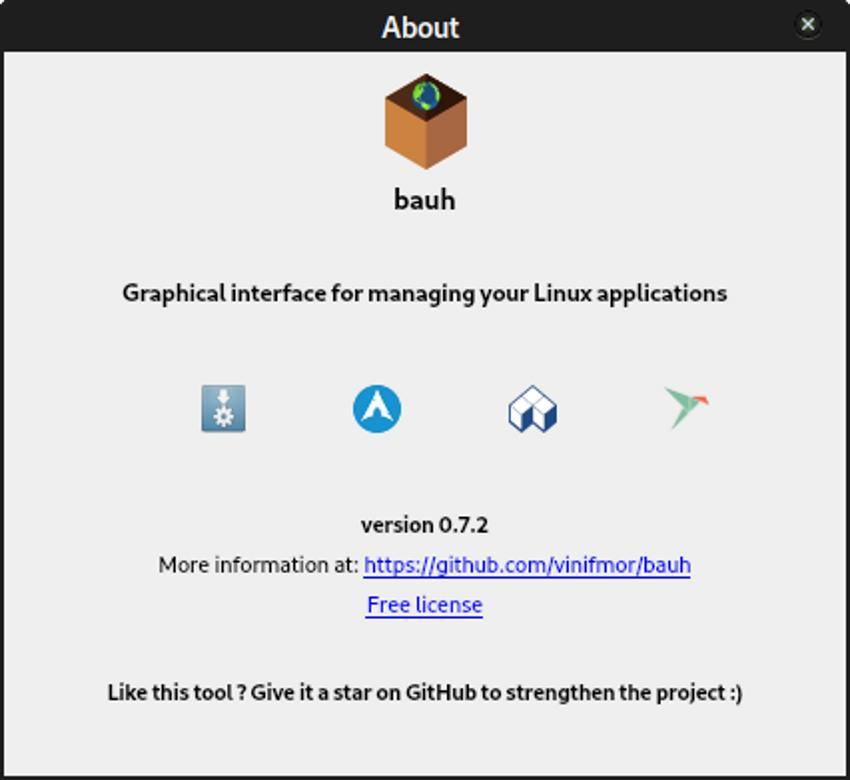
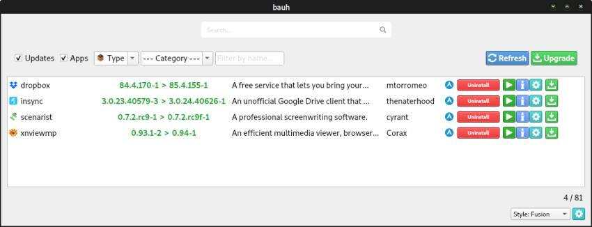
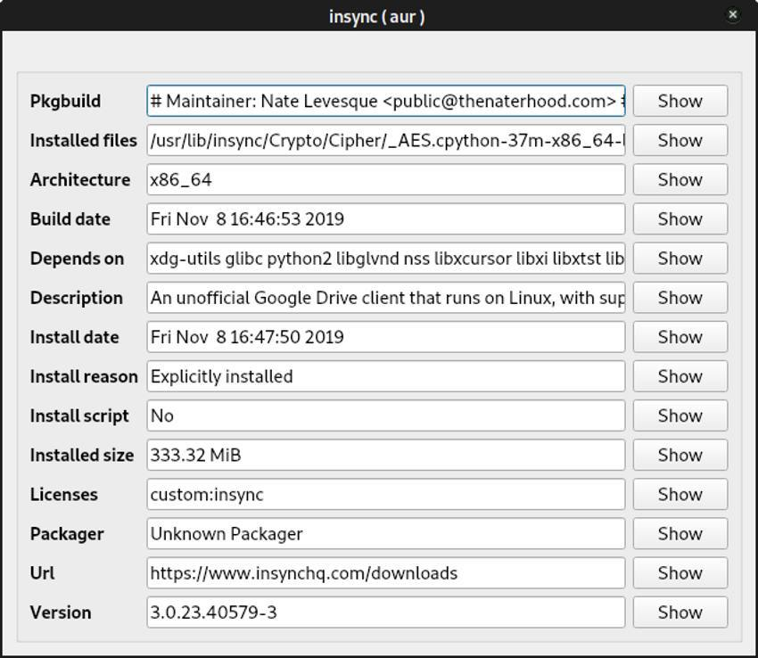
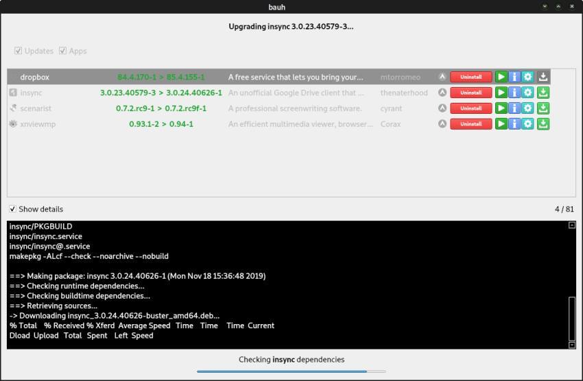
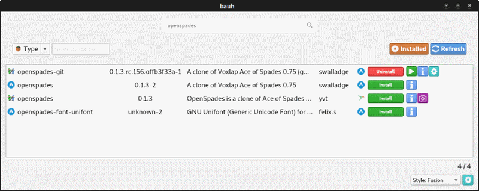

bauh：在一个界面中管理 Snap、Flatpak 和 AppImage
| 2019-11-27 09:30 评论: 1
Snap、Flatpak 和 AppImage 等通用软件包的最大问题之一就是管理它们。大多数内置的软件包管理器都不能全部支持这些新格式。
幸运的是，我偶然发现了一个支持这几种通用包格式的应用程序。
bauh：多包装需求的管理器
bauh（LCTT：我给该软件建议一个中文名：“包豪”）最初名为 fpakman，旨在处理 Flatpak、Snap、AppImage 和 AUR 软件包。创建者 vinifmor 在 2019 年 6 月启动了该项目，意图“为 Manjaro 用户提供管理 Flatpak 的图形界面”。此后，他扩展了该应用程序，以添加对基于 Debian 的系统的支持。

首次打开 bauh 时，它将扫描已安装的应用程序并检查更新。如果有任何需要更新的内容，它们将列在前面并居中。更新所有软件包后，你将看到已安装的软件包列表。你可以取消选择不需要更新的软件包，以防止其被更新。你也可以选择安装该应用程序的早期版本。

你也可以搜索应用程序。bauh 提供了有关已安装和已搜索软件包的详细信息。如果你对一种（或多种）软件包类型不感兴趣，则可以在设置中取消选择它们。



在你的 Linux 发行版上安装 bauh
让我们看看如何安装 bauh。
基于 Arch 的发行版
如果你安装的是最近的 Manjaro，则应该一切已经就绪。bauh 默认情况下已安装。如果你安装的是较早版本的 Manjaro（如我一样）或其他基于 Arch 的发行版，则可以在终端中输入以下内容从 AUR 中进行安装：
sudo pacman -S bauh基于 Debian/Ubuntu 的发行版
如果你拥有基于 Debian 或 Ubuntu 的 Linux 发行版，则可以使用 pip 安装 bauh。首先，请确保在 Ubuntu 上安装了 pip。
sudo apt install python3-pip然后使用它来安装 bauh：
pip3 install bauh但是，该软件的创建者建议手动安装它，以避免弄乱系统的库。
要手动安装 bauh，你必须先下载其最新版本。下载后，可以使用图形工具或 unzip 命令解压缩。接下来，在终端中打开该文件夹。你将需要使用以下步骤来完成安装。
首先，在名为 env 的文件夹中创建一个虚拟环境：
python3 -m venv env现在在该环境中安装该应用程序的代码：
env/bin/pip install .启动该应用程序：
env/bin/bauh一旦完成了 bauh 的安装，就可以通过更改环境设置和参数来对其进行微调。
bauh 的未来之路
bauh 在短短的几个月中增长了很多。它有计划继续增长。当前的路线图包括：
- 支持其他打包技术
- 每种打包技术一个单独模块
- 内存和性能改进
- 改善用户体验
结语
当我尝试 bauh 时，遇到了两个问题。当我第一次打开它时，它告诉我尚未安装 Snap，如果要使用 Snap 软件包，则必须安装它。我知道我已经安装了 Snap，因为我在终端中运行了 snap list，并且可以正常工作。我重新启动系统，Snap 才工作正常。
我遇到的另一个问题是我的一个 AUR 软件包无法更新。我可以用 yay 更新软件包，而没有任何问题。可能是我的 Manjaro 有问题，我已经使用了它 3 到 4 年。
总体而言，bauh 可以工作。它做到了宣称的功能。我不能要求更多。
你有没有用过 hauh？如果有的话，你最喜欢的用于管理不同打包格式的工具是什么？在下面的评论中让我们知道。
via: https://itsfoss.com/bauh-package-manager/
作者：John Paul 选题：lujun9972 译者：wxy 校对：wxy